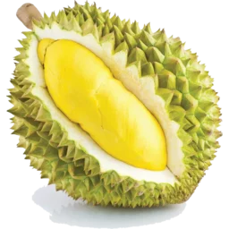
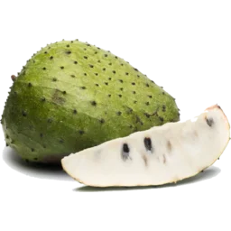
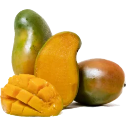
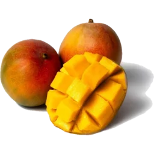
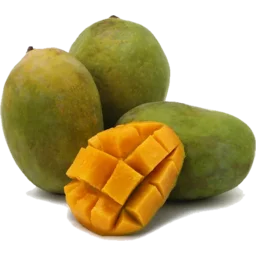
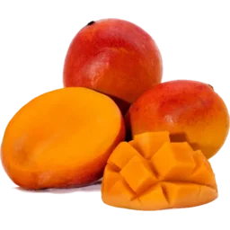
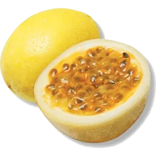

Exotic fruit,
something for all.
Fruit in any flavour, texture, shape and size,
from all over the world, in one shop!
A collection of everything in season around the world,
contact us
to ask about availability of a specific fruit!
Exotic fruits
Discover fruits from around the world, from unusual varieties of familiar
favourites to rare and exotic fruits with flavours and textures you won't
find in an ordinary greengrocer. We carefully select our fruit for its
quality, freshness and flavour, with new and unusual varieties arriving
throughout the year as the seasons change.
From creamy durian and fragrant Buddha's Hand to intensely sweet yellow
pitaya, aromatic rambutan and intensely sour curuba passion fruit, every
fruit has its own character, flavour and story. Some are prized for their
sweetness, some for their acidity, and others for flavours and textures
that are almost impossible to compare to anything more familiar.
Our exotic fruits are about discovering incredible flavours,
not simply discovering something unusual. We look for exceptional
varieties from the places where they grow best, bringing together fruits
with distinctive tastes, textures and aromas that are genuinely worth
seeking out.
Some fruits are seasonal rarities that may only appear for a short time,
while others return throughout the year. Whether you're looking to try
something completely new, searching for a particular fruit, recreating a
recipe from abroad or simply interested in what's in season, there's
always something worth exploring.
And sometimes the fruit you try out of curiosity becomes your
new favourite.








Mangoes
Mangoes are among the world's most diverse fruits, with hundreds of varieties
grown across tropical and subtropical regions. From intensely sweet and
creamy varieties to fragrant, tangy and fibreless mangoes, each cultivar
has its own distinctive character.
We source a wide selection from around the world, bringing together some of
the most interesting and sought-after mangoes in one place. An Amrapali
might offer rich, honey-like sweetness, while an Anwar Ratol is prized for
its fragrance and a perfectly ripe mango can have wonderfully soft, creamy
flesh. The differences between varieties can be remarkable.
There is far more to mangoes than the one variety found in most
supermarkets. Each cultivar can bring a completely different
balance of sweetness, acidity, aroma, texture and flavour, making mangoes
one of the most rewarding fruits to explore.
Some mangoes we sell, depending on the season, include:
Amrapali,
Anwar Ratol,
Apple,
Ataulfo,
Banana,
Banganapalli,
East Indian,
Green,
Haden,
Julie,
Kent,
Langra,
Rose-Shaped Dried,
Shelly,
Sugar,
TJC
and
Vilad
mangoes.
Trying different mangoes is a chance to discover just how different
one fruit can taste. For an even more extensive list detailing
individual mangoes, their seasonality and flavour, check our
online store.











Dragon fruits
Dragon fruits are known for their striking appearance, with vibrant flesh
that can range from bright white to deep crimson. But the real excitement
is what lies inside: different varieties can have surprisingly different
flavours, aromas and textures.
We source white, red and yellow dragon fruit, each offering its own
character. Yellow pitahaya are particularly prized for their
intensely sweet and fragrant flesh, while white dragon
fruit tends to be lighter and more delicately flavoured. Red-fleshed
varieties can offer a richer, fruitier flavour alongside their vivid
colour.
Their crisp, juicy texture makes them delicious eaten fresh, while their
striking colours also make them an excellent addition to fruit platters,
desserts and drinks. But it is the differences in flavour between the
varieties that make them particularly interesting to explore.
Dragon fruit isn't just one flavour. From delicate and
refreshing to intensely sweet and aromatic, each variety offers a
different experience.
Dragon fruits are available throughout the year, so there's plenty of
opportunity to try different varieties and discover which one you like
best.


Citrus
Citrus fruits are far more diverse than the familiar oranges, lemons and
grapefruits found in most supermarkets. Our selection includes unusual
varieties from different parts of the world, ranging from intensely sweet
mandarins and richly coloured blood oranges to aromatic kaffir limes,
kumquats and distinctive Japanese citrus.
Each variety brings its own combination of sweetness, acidity, fragrance
and bitterness. Blood oranges can have beautifully coloured flesh and a
deeper, more complex flavour, while kumquats can be eaten whole with their
fragrant skin. Kaffir limes are valued for their intensely aromatic peel,
and unusual mandarins and grapefruit varieties can offer flavours far
removed from their everyday counterparts.
Citrus is incredibly versatile, both in flavour and in how you use
it. Some varieties are perfect for eating fresh, while others can
transform cooking, baking, cocktails and preserves with their juice,
flesh, peel or aroma.
We follow the seasons to bring in varieties when they are at their best,
so our selection is constantly changing. From sweet and easy to eat to
intensely aromatic or sharply acidic, there is always another citrus to
discover.
Sometimes the most interesting part of citrus is discovering what
its aroma, flavour and versatility can add to something familiar.


Passion fruits
Passion fruits are celebrated for their intensely aromatic flavour and
vibrant, juicy interiors, but the familiar purple passion fruit is only
one of many varieties available. Our selection can include different types
of passion fruit and passionfruit relatives, from sweet and fragrant
granadilla to intensely tart maracuya and sour curuba.
Each has its own balance of sweetness, acidity, aroma and texture. Some
varieties are exceptionally sweet and fragrant, while others have a much
sharper acidity. The contrast between the crisp or leathery exterior and
the intensely flavoured pulp inside is part of what makes them so appealing,
with the seeds adding a satisfying crunch.
Passion fruit is all about intensity. A small fruit can
bring an extraordinary amount of flavour to a dish, whether eaten straight
from the shell or used to add sweetness, acidity and fragrance to yoghurt,
desserts, drinks and sauces.
Passion fruits are particularly dependent on season and growing conditions,
so the varieties available can change throughout the year. We enjoy
sourcing different types because they demonstrate just how much variety
exists within the passionfruit family.
From sweet and fragrant to intensely sour, there is a passion fruit
for almost every kind of flavour.





Bananas
Bananas may be one of the world's most familiar fruits, but the varieties
we stock can be a world away from the everyday supermarket banana. From
intensely sweet Sugar bananas and distinctive Red bananas from Ecuador to
traditional Sri Lankan varieties, each has its own flavour, texture and
character.
Red bananas, for example, have a distinctive reddish-purple skin and can
develop a wonderfully sweet, almost berry-like character when fully ripe.
Other varieties can be creamier, firmer or more aromatic than the bananas
most people are accustomed to. Some are best enjoyed fresh, while others
are particularly suited to cooking, frying or incorporating into
traditional dishes.
Bananas can be far more varied than most people realise.
Different varieties can bring completely different flavours, textures and
uses, turning a fruit that seems familiar into something surprisingly new.
As with our other exotic fruits, we select bananas based on their variety,
quality and eating characteristics rather than treating them all as the
same fruit. Availability depends on the season and what can be sourced at
its best, from unusual fresh varieties to products such as banana chips.
Once you've tasted a great banana variety, the everyday banana
suddenly feels like only one version of a much bigger fruit.


Our fruits
Guaranteed to
suit your taste
Our team can suggest fruits based on your preferences, whether you enjoy sweet, sour, tropical, or unusual flavours. We have fruits fitting every flavour profile imaginable. Each visit is an exciting new encounter with interesting new exotic fruits.

Online exotic fruit shop
My Exotic Fruit